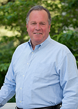

| Bill Dodd (USA CA) | |
|---|---|
|  | |
| First Name: | Bill |
| Last Name: | Dodd |
| Middle Name: | |
| Nickname: | |
| Gender: | Male |
| Start Edit Date: | 2017/01/26 |
| End Edit Date: | 2017/02/09 |
| Office: | CA State Senator |
| State: | California |
| Senate District: | 3 |
| Party: | Democratic |
| Official Gov Site: | http://sd03.senate.ca.gov |
| Additional Site: | http://www.billdodd.com/ |
| Wikipedia article: | https://en.wikipedia.org/wiki/Bill_Dodd_(California_politician) |
| Official Facebook: | https://www.facebook.com/BillDoddCA/ |
| Official Twitter: | https://twitter.com/BillDoddCA |
| Additional Twitter: | |
Bill Dodd believes that climate change is “a serious threat to our children and grandchildren” (1). He voted for SB 32: The California Global Warming Solutions Act, which established new California clean energy, clean air and greenhouse gas reduction goals for 2030, in 2016, though not in 2015 (2).
1. http://www.billdodd.com/issues/ Campaign website, accessed January 17, 2017.
2. Liam Dillion, “More than a dozen assembly members flipped their votes from last year to support climate change bill”, August 23, 2016, LA Times, http://www.latimes.com/politics/essential/la-pol-sac-essential-politics-updates-more-than-a-dozen-assemblymembers-1471987788-htmlstory.html
Information HAS NEVER been transferred to Wikipedia ✗
On his campaign site, Bill Dodd states that climate change is “a serious threat to our children and grandchildren” (http://www.billdodd.com/issues/. Accessed January 17, 2017).
Bill Dodd voted to extend the Global Warming Solutions Act as an State Assembly member. http://www.billdodd.com/issues/ He had voted against it in 2015 (Liam Dillion, “More than a dozen assembly members flipped their votes from last year to support climate change bill”, August 23, 2016, LA Times, http://www.latimes.com/politics/essential/la-pol-sac-essential-politics-updates-more-than-a-dozen-assemblymembers-1471987788-htmlstory.html)
Automatically Generated Legislative Actions
SB 32 California Global Warming Solutions Act of 2006: emissions limit.
Final legislative action 2016-08-24 passed yeas 25, nays 13.
SB 350 Clean Energy and Pollution Reduction Act of 2015.
Final legislative action 2015-09-11 passed yeas 26, nays 14.
SB 1383 Short-lived climate pollutants: methane emissions: dairy and livestock: organic waste: landfills.
Final legislative action 2016-08-31 passed yeas 25, nays 12.
AB 197 State Air Resources Board: greenhouse gases: regulations.
Final legislative action 2016-08-24 passed yeas 45, nays 30.
AB 1550 Greenhouse gases: investment plan: disadvantaged communities.
Final legislative action 2016-08-31 passed yeas 53, nays 22.
AB 1110 Greenhouse gases emissions intensity reporting: retail electricity suppliers.
Final legislative action 2016-08-31 passed yeas 54, nays 25.
AB 2722 Transformative Climate Communities Program.
Final legislative action 2016-08-31 passed yeas 49, nays 27.
Bill Dodd stated on his campaign site, “I believe that climate change is a serious threat to our children and grandchildren. We must act now to both reduce climate pollutants and to adapt to environmental changes that are already underway, such as sea level rise, periodic drought, infestations of invasive species, and an increase in wildfires.” http://www.billdodd.com/issues/
Automatically captured tweets
Bill Dodd was a Republican county supervisor before being elected to the Assembly in 2014. (Alexei Koseff. “Are Bill Dodd and Mariko Yamada headed for a November faceoff?” Sacramento Bee. May 28, 2016. http://www.sacbee.com/news/politics-government/capitol-alert/article80450907.html )